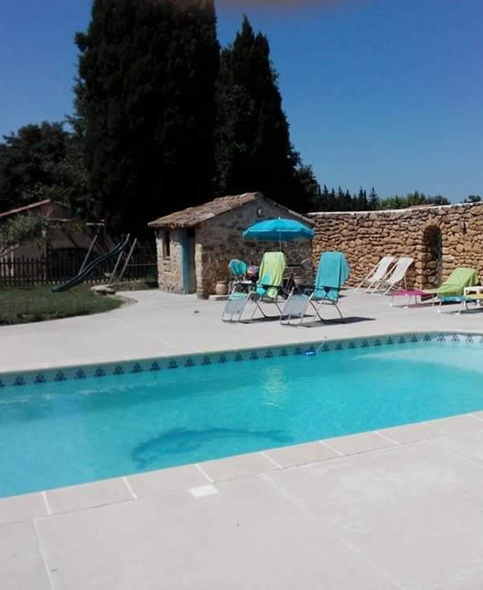

Bienvenue au Mas Bleu en Provence
Niché dans un authentique mas de pierres, notre meublé de tourisme vous séduira notamment avec son grand jardin de 4000m2, sa piscine sécurisée, son aire de jeux pour enfants.
Situé au 1er étage et disposant d'une entrée indépendante, il est attenant à la maison des propriétaires.
Le mas bleu bénéficie d'un emplacement privilégié à la fois à la campagne et à seulement 2km du centre ville de Salon de Provence.
Vous serez au coeur de notre belle Provence, entre Alpilles et Luberon, aux portes de la Camargue, à seulement 35 kilomètres de la mer et à une soixantaine de kilomètres de notre "géant" de Provence, le Mont Ventoux.
Le Mas Bleu en Provence vous accueille
Pendant votre séjour au Mas Bleu en Provence, vous bénéficierez de nombreux équipements et services pour faciliter votre séjour. Et pour fêter votre arrivée, un repas de bienvenue vous sera offert (pour un séjour d'au minimum 7 nuits).
Équipements
Piscine de 80m2, lits de soleil, wifi gratuit, TV satellite, climatisation réversible, parking couvert, prêt de vélos avec équipements de sécurité.
La piscine et le jardin
Piscine au sel 9x4 et lits de soleil. Aire de jeux pour enfants. Bassin d'agrément avec ses nénuphars et ses carpes Koï calorées. Potager et poulailler "bio". Vos animaux domestiques sont bienvenus !
Le meublé
D'une surface de 50m2, il se compose d'un grand séjour (avec canapé-lit en 140) et coin cuisine équipée, d'une grande chambre avec lit double en 160, d'une douche à l'italienne et WC séparé, d'un balcon de 11m2.
Le Mas Bleu c'est toute l'année
Découvrez quelques photos de vos prochaines vacances sous le ciel bleu de Provence

Bienvenue au mas bleu
La piscine et le gîte au premier étage

Le gîte
La vue depuis la porte d'entrée du gîte

Le coin détente
La terrasse de la piscine du Mas Bleu en Provence

Le jardin
Figuiers et oliviers de Provence

Le parc
Le parc arboré du Mas Bleu

Platane bicentenaire
Le platane bicentenaire du Mas Bleu

La piscine
la piscine au sel du Mas Bleu

Le Mas Bleu
le vieux mas bicentenaire

Le deuxième gîte
Le deuxième gîte du mas bleu au rez-de-chaussée

Vue du parc
La vue depuis l'entrée du mas bleu

Le coin des enfants
Les jeux enfants du Mas Bleu en Provence

Le coin potager
Le potager du Mas Bleu en Provence

Le gîte
La cuisine et le salon du Mas Bleu en Provence

La chambre
La chambre du Mas Bleu en Provence

La terrasse
La terrasse du Mas Bleu en Provence

Halloween
Halloween au Mas Bleu

Automne
Automne au Mas Bleu
Les hôtes du Mas Bleu en Provence

Vous serez accueillis par Michel, Bernadette et leur fille Éva. Tout au long de votre séjour vous pourrez solliciter des conseils sur les activités, les visites incontournables ou simplement vous détendre au bord de la piscine.
— Bernadette, Michel et Eva
Quelques uns des sites naturels incontournables de Provence
A côté de Salon de Provence, découvrez tous les sites naturels proche de votre location de vacances. Accéder aux liens ci-dessous pour plus d'informations


A côté de Salon de Provence, découvrez aussi la Sainte-Victoire qui est le sujet de près de 80 œuvres du peintre français Paul Cézanne, le pays d'Aix ou encore les calanques entre Marseille et Cassis.